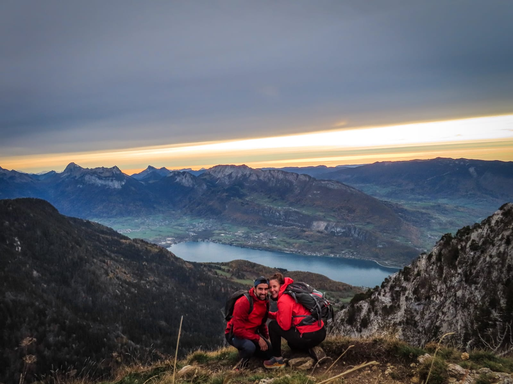
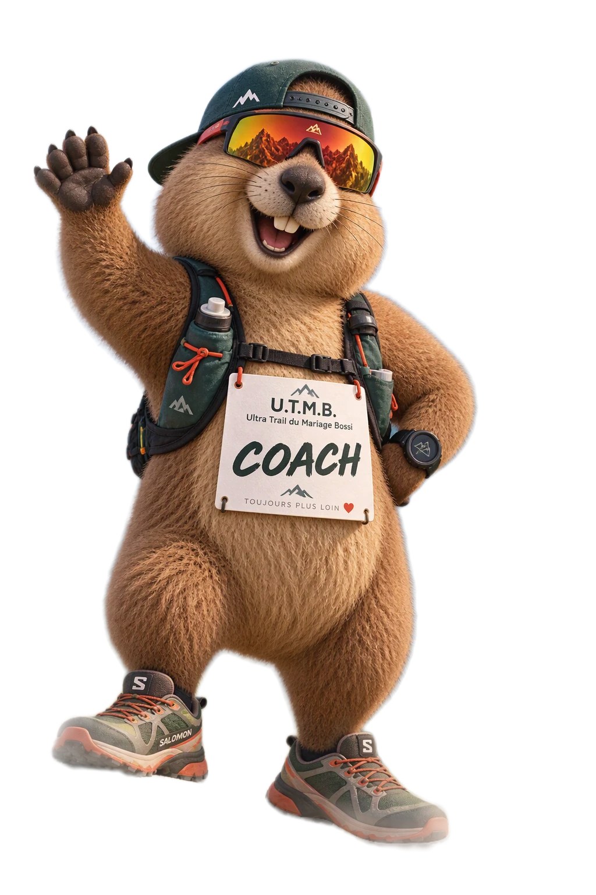

Bretagne — Domaine des Hayes
U.T.M.B.
Ultra Trail du Mariage Bossi
Marie & Lorenzo
24 juillet 2027
La ligne de passage
Des sommets
Des sommets
aux embruns
L’esprit vient des sentiers. L’arrivée, elle, se joue en Bretagne.
Le trail reste le fil narratif. Le Domaine des Hayes devient le décor réel, utile et immédiatement identifiable du week-end.
Camp de base réel
Domaine des Hayes
Maxent · au cœur de Brocéliande
47.980° N2.036° O
Illustration de composition — à remplacer par une photo du domaine validée avant production.
Le parcours breton
Votre week-end, enfin sur la bonne carte
Une carte locale remplace le Mont-Blanc : elle conserve les codes du trail, mais répond aux vraies questions des invités.
Domaine des HayesMaxent · Ille-et-Vilaine
Plan de principe · emplacements exacts à valider
Même mécanique, mots mieux ancrés
Les étapes relient le trail à la Bretagne
Les types, formulaires et règles de déblocage restent inchangés. Seuls quelques intitulés évoluent.

Clin d’œil ponctuel
« J’avais préparé les crampons… Heureusement, j’ai gardé la boussole. »
Coach reste alpin : aucun relooking permanent.